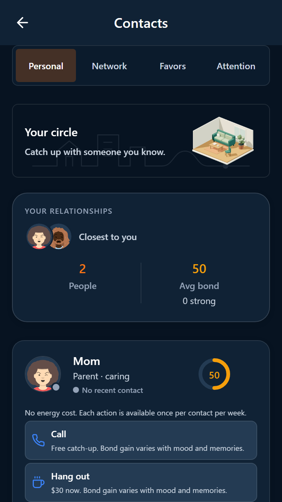
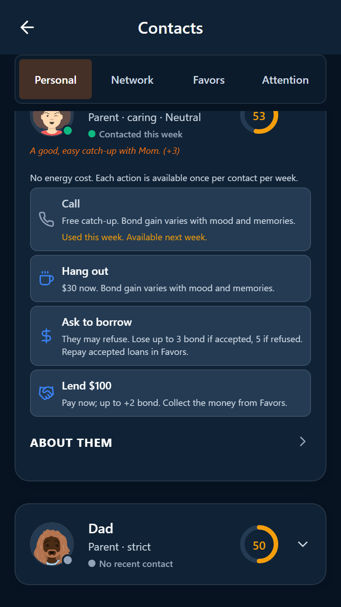
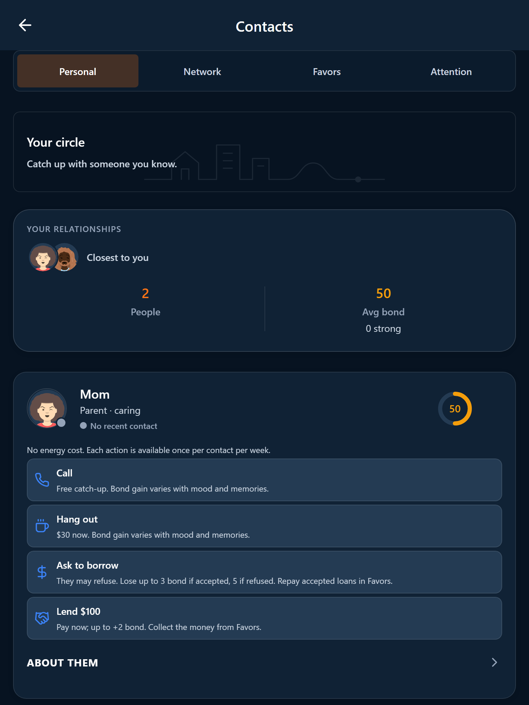
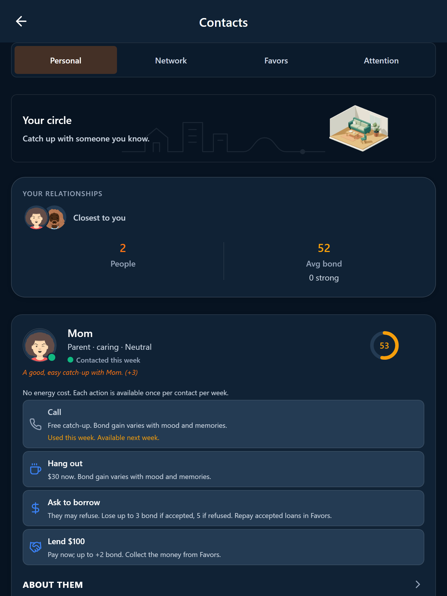

Action details / 375px

Borrowing, lending and cooldown / 375px

Action details / 768px

Borrowing, lending and cooldown / 768px

Actual browser captures from isolated QA saves. Visible obligations, costs and weekly status. Native acceptance remains open.



